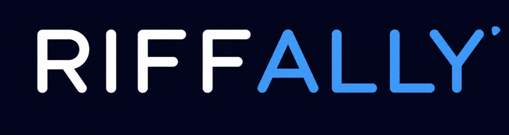

Support
Each RiffAlly app includes a built-in guide. Tap ? for concise explanations of its core controls and options.
Quick checks
- Metronome: confirm the BPM, sound, work/rest settings, and device volume.
- Scales: choose a root and scale, then use the pattern and playback controls.
- Tuner: allow microphone access, play one clear string at a time, and check the selected tuning and reference pitch.
- Harmony: use Atlas to find a chord, Shape to change its grip, Path for voice leading, and Morph for one-note changes.
- Ear: listen once without guessing, then connect what you hear to the matching interval or fretboard position.
- Jam: choose a musical setting, confirm the tempo and key, then begin with a short focused session.
- Practice: set the time you have and the skill you want to improve, then follow the session one step at a time.
- Slowdown: try the included track first, set A and B around a difficult phrase, reduce Speed, enable Loop, and use the tempo ladder to work back toward 100%.
Optional tips
Tips in the RiffAlly menu are optional consumable in-app purchases handled by Apple. They never unlock features. For billing, purchase-history, or refund questions, use Apple’s purchase support.
Contact
Email riffallysupport@gmail.com. Please include the app name, iPhone model, iOS version, app version, and a short description. Do not include private or sensitive information.